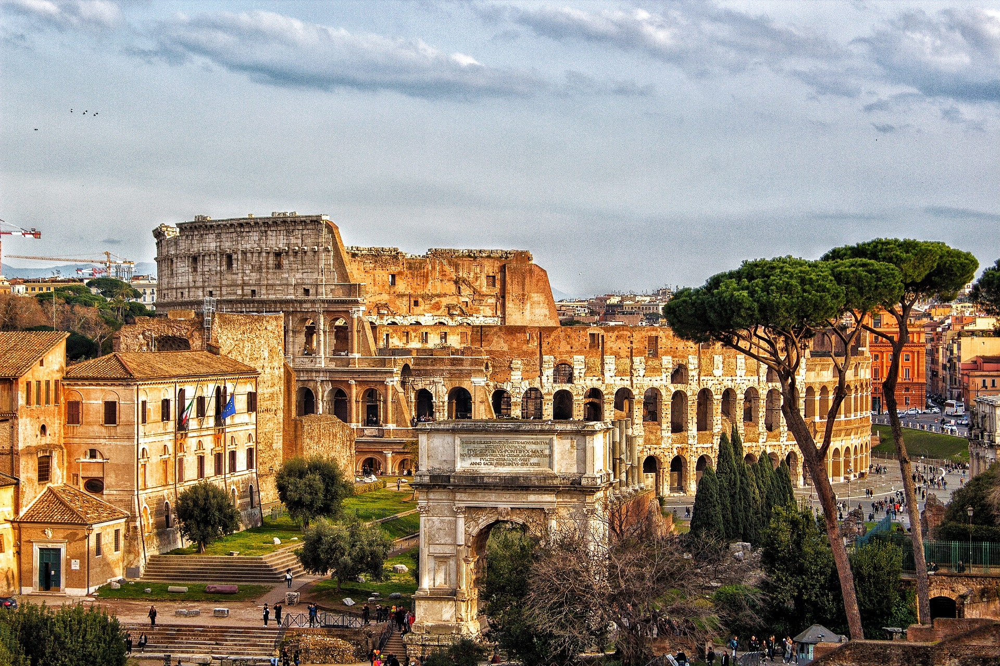

If you love this city click on the heart!

Discover Rome
Colosseum
The iconic symbol of Rome, this ancient amphitheater once hosted gladiatorial contests and public spectacles.
Vatican City
A spiritual and cultural center in Rome, known for St. Peter's Basilica, the Sistine Chapel, and its vast art collections.
Cuisine
Enjoy traditional Roman dishes such as carbonara and margherita pizza. Explore the vibrant food scene in local trattorias.
Trevi Fountain
According to tradition, tossing a coin into the fountain ensures a return trip to Rome.